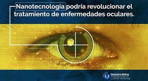

La nanotecnología es la manipulación de la materia a una escala casi atómica para
crear nuevas estructuras, materiales y aparatos. Esta tecnología promete avances
científicos en muchos sectores como la medicina, productos para el consumidor,
energía, materiales y fabricación, para tener una idea de lo que estamos hablando,
la medida nano equivale a 70 mil veces menos que la espesura de un cabello.
Nos sirve: posibilita el desarrollo de tejidos inteligentes que ni se manchen
ni se arruguen, así como de materiales más resistentes, ligeros y duraderos para
fabricar cascos de moto o equipamiento deportivo.
Hoy en día, los nanomateriales se utilizan mundialmente para mejorar los tratamientos
y la vida de los pacientes que sufren diferentes enfermedades incluyendo cáncer
de ovario y de seno, afecciones renales, infecciones microbianas, colesterol elevado,
síntomas menopáusicos, esclerosis múltiple, dolor crónico y asma
